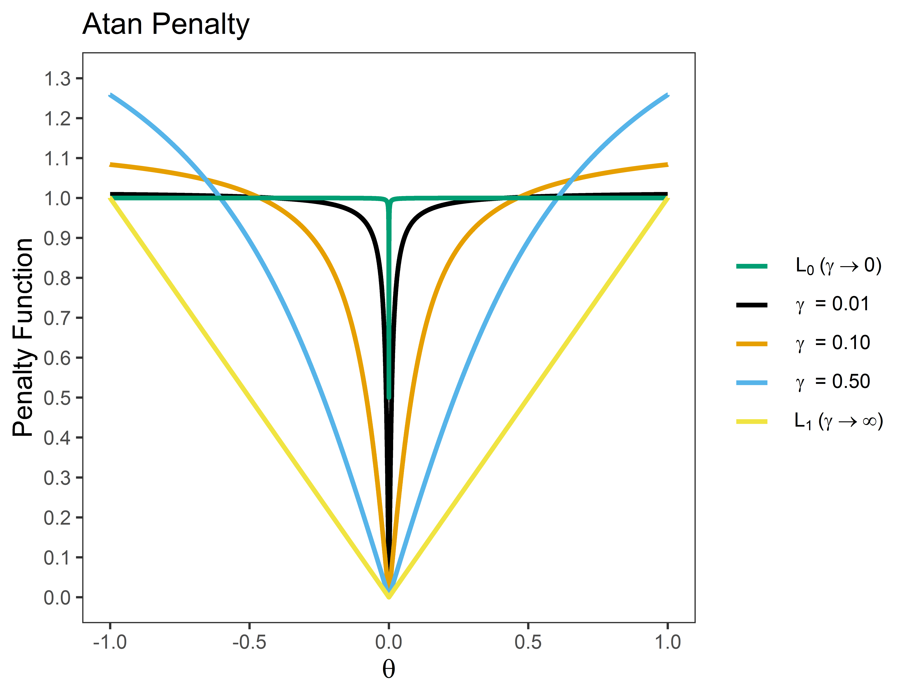
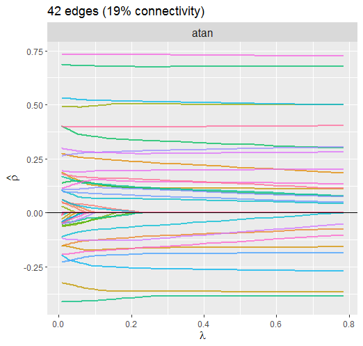
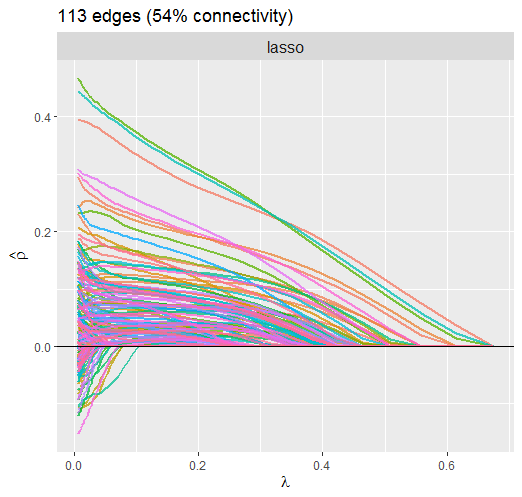

The primary goal of GGMncv is to provide non-convex penalties for estimating Gaussian graphical models. These are known to overcome the various limitations of lasso (least absolute shrinkage “screening” operator), including inconsistent model selection (Zhao and Yu 2006), biased estimates (C.-H. Zhang 2010)1, and a high false positive rate (see for example Williams and Rast 2020; Williams et al. 2019).
Note that these limitations of lasso are well-known. In the case of false positives, for example, it has been noted that
The lasso is doing variable screening and, hence, I suggest that we interpret the second ‘s’ in lasso as ‘screening’ rather than ‘selection.’ Once we have the screening property, the task is to remove the false positive selections (p. 278, Tibshirani 2011).
An additional goal of GGMncv is to provide methods for making statistical inference in regularized Gaussian graphical models. This is accomplished with the de-sparsified graphical lasso estimator introduced in Jankova and Van De Geer (2015). This is described in the section De-Sparsified Estimator. The next section shows how the de-sparsified estimator can be used to compare GGMs.
Installation
You can install the released version (2.0.0) of GGMncv from CRAN with:
install.packages("GGMncv")You can install development version from GitHub with:
# install.packages("devtools")
devtools::install_github("donaldRwilliams/GGMncv")Penalties
The following are implemented in GGMncv:
Atan (
penalty = "atan"; Wang and Zhu (2016)). This is currently the default.Seamless L0 (
penalty = "selo"; Dicker, Huang, and Lin (2013))Exponential (
penalty = "exp"; Wang, Fan, and Zhu (2018))Smooth integration of counting and absolute deviation (
penalty = "sica"; Lv and Fan (2009))Log (
penalty = "log"; Mazumder, Friedman, and Hastie (2011))Lq (
penalty = "lq", 0 < q < 1; e.g., Knight and Fu (2000))Smoothly clipped absolute deviation (
penalty = "scad"; Fan and Li (2001))Minimax concave penalty (
penalty = "mcp"; C.-H. Zhang (2010))Adaptive lasso (
penalty = "adapt"; Zou (2006))Lasso (
penalty = "lasso"; Tibshirani (1996))
Options 1-5 are continuous approximations to the L0 penalty, that is, best subsets model selection. However, the solution is computationally efficient and solved with the local linear approximation described in Fan, Feng, and Wu (2009) or the one-step approach described in Zou and Li (2008).
Penalty Function
The basic idea of these penalties is to provide “tapering,” in which regularization is less severe for large effects. The following is an example for the Atan penalty ( is the hyperparameter)

Note that (1) the penalty provides a “smooth” function that ranges from L0 (best subsets) and L1 (lasso) regularization; and (2) the penalty “tapers” off for large effects.
Computation
Computing the non-convex solution is a challenging task. However, section 3.3 in Zou and Li (2008) indicates that the one-step approach is a viable approximation for a variety of non-convex penalties, assuming the initial estimates are “good enough”2. To this end, the initial values can either be the sample based inverse covariance matrix or a custom matrix specified with initial.
Tuning Parameter
Selection
The tuning parameter can be selected with several information criteria (IC), including aic, bic (currently the default),ebic, ric, in addition to any of the generalized information criteria provided in section 5 of Kim, Kwon, and Choi (2012).
Information criterion can be understood as penalizing the likelihood, with the difference being in the severity of the penalty. -2 times the log-likelihood is defined as
where is the estimated precision matrix and is the sample based covariance matrix. The included criterion then add the following penalties:
- GIC1 (BIC):
Note that refers to the cardinality of the edge set, that is, the number of edges.
- GIC2:
p denotes the number of nodes or columns in the data matrix.
GIC3 (RIC):
GIC4:
GIC5 (BIC with divergent dimensions):
GIC6:
AIC:
Although cross-validation is not implemented for selecting the tuning parameter, AIC can be used to approximate leave-one-out cross-validation.
- EBIC:
The tuning parameter is selected by setting select = TRUE and then the desired IC with, for example, ic = "gic_3".
Example: Structure Learning
A GGM can be fitted as follows
library(GGMncv)
# data
Y <- GGMncv::ptsd[,1:10]
# polychoric
R <- cor(Y, method = "spearman")
# fit model
fit <- ggmncv(R = R, n = nrow(Y),
penalty = "atan")
# print
fit
#> 1 2 3 4 5 6 7 8 9 10
#> 1 0.000 0.255 0.000 0.309 0.101 0.000 0.000 0.000 0.073 0.000
#> 2 0.255 0.000 0.485 0.000 0.000 0.000 0.122 0.000 0.000 0.000
#> 3 0.000 0.485 0.000 0.185 0.232 0.000 0.000 0.000 0.000 0.000
#> 4 0.309 0.000 0.185 0.000 0.300 0.000 0.097 0.000 0.000 0.243
#> 5 0.101 0.000 0.232 0.300 0.000 0.211 0.166 0.000 0.000 0.000
#> 6 0.000 0.000 0.000 0.000 0.211 0.000 0.234 0.079 0.000 0.000
#> 7 0.000 0.122 0.000 0.097 0.166 0.234 0.000 0.000 0.000 0.000
#> 8 0.000 0.000 0.000 0.000 0.000 0.079 0.000 0.000 0.000 0.114
#> 9 0.073 0.000 0.000 0.000 0.000 0.000 0.000 0.000 0.000 0.261
#> 10 0.000 0.000 0.000 0.243 0.000 0.000 0.000 0.114 0.261 0.000Note that the object fit can be plotted with the R package qgraph.
Example: Out-of-Sample Prediction
The GGMncv package can also be used for prediction, given the correspondence between the inverse covariance matrix and multiple regression (Kwan 2014).
Y <- scale(Sachs)
# test data
Ytest <- Y[1:100,]
# training data
Ytrain <- Y[101:nrow(Y),]
# default: atan and tuning free
fit <- ggmncv(cor(Ytrain),
n = nrow(Ytrain))
# predict
pred <- predict(fit, train_data = Ytrain, newdata = Ytest)
# print mse
round(apply((pred - Ytest)^2, 2, mean), 2)
#> Raf Erk Plcg PKC PKA PIP2 PIP3 Mek P38 Jnk Akt
#> 0.18 0.27 0.59 0.42 0.39 0.47 0.69 0.16 0.15 0.69 0.26 Solution Path
When select = 'lambda', the solution path for the partial correlations can be plotted.
Atan Penalty
Here is the current default penalty
# data
Y <- ptsd
# fit model
fit <- GGMncv(cor(Y), n = nrow(Y),
select = TRUE,
store = TRUE)
# plot path
plot(fit,
alpha = 0.75)
The dotted line is denotes the selected lambda. Notice how the larger partial correlations “escape” regularization, at least to some degree, compared to the smaller partial correlations.
Lasso Penalty
Next L1 regularization is implemented by setting penalty = "lasso".
# data
Y <- ptsd
# fit model
fit <- GGMncv(cor(Y), n = nrow(Y),
penalty = "lasso"
store = TRUE)
# plot path
plot(fit,
alpha = 0.75)
This solution is much different than above. For example, it is clear that the large partial correlations are heavily penalized, whereas this was not so for the atan penalty. The reason this is not ideal is that, if the partial correlations are large, it makes sense that they should not be penalized that much. This property of non-convex regularization should provide nearly unbiased estimates, which can improve, say, predictive accuracy.
Also notice that the atan penalty provides a sparser solution.
Bootstrapping
GGMncv does not provide confidence intervals based on bootstrapping.
This is because, in general, “confidence” intervals from penalized approaches do not have the correct properties to be considered confidence intervals (see Wikipedia). This sentiment is echoed in Section 3.1, “Why standard bootstrapping and subsampling do not work,” of Bühlmann, Kalisch, and Meier (2014):
The (limiting) distribution of such a sparse estimator is non-Gaussian with point mass at zero, and this is the reason why standard bootstrap or subsampling techniques do not provide valid confidence regions or p-values (pp. 7-8).
For this reason, it is common to not provide standard errors (and thus confidence intervals) for penalized models 3. For example, this is from the penalized R package:
It is a very natural question to ask for standard errors of regression coefficients or other estimated quantities. In principle such standard errors can easily be calculated, e.g. using the bootstrap. Still, this package deliberately does not provide them. The reason for this is that standard errors are not very meaningful for strongly biased estimates such as arise from penalized estimation methods (p.18, Goeman, Meijer, and Chaturvedi 2018)
However, GGMncv does include the so-called variable inclusion “probability” for each relation (see p. 1523 in Bunea et al. 2011; and Figure 6.7 in Hastie, Tibshirani, and Wainwright 2015). These are computed using a non-parametric bootstrap strategy.
Additionally, more recent work does allow for obtaining confidence intervals and p-values with the de-sparsified method. For the graphical lasso, the former are not available for the partial correlations so currently only p-values are provided (Statistical Inferece).
Statistical Inference
It might be tempting to think these approaches lead to rich inference. This would be a mistake–they suffer from all of the problems inherent to automated procedures for model selection (e.g., Berk et al. 2013; Lee et al. 2016).
And note that:
Simply not detecting an effect does not provide evidence for the null hypothesis.
There is not necessarily a difference between an effect that was and an effect that was not detected.
Supporting these claims would require a valid confidence interval that has been corrected for model selection and/or regularization. With these caveats in mind, data driven model selection in GGMncv can be used for explicit data mining or prediction.
De-Sparsified Estimator
To make inference, GGMncv computes the de-sparsified estimator, , introduced in Jankova and Van De Geer (2015), that is
where is the estimated precision matrix and is the sample based correlation matrix. As the name implies, this removes the zeros and corrects the bias from regularization. The asymptotic variance is then given as
which readily allows for computing p-values for each off-diagonal element of the de-sparsified estimator.
This is implemented with
# data
Y <- ptsd
# fit model
fit <- ggmncv(cor(Y), n = nrow(Y))
# make inference
fdr_ggm <- inference(fit, method = "fdr")
# print
fdr_ggm
#> Statistical Inference
#> fdr: 0.05
#> ---
#> 1 2 3 4 5 6 7 8 9 10 11 12 13 14 15 16 17 18 19 20
#> 1 0 1 0 1 0 0 0 0 0 0 1 0 0 0 0 0 0 0 0 0
#> 2 1 0 1 0 0 0 0 0 0 0 0 0 0 0 0 1 0 0 0 0
#> 3 0 1 0 1 0 0 0 0 0 0 0 0 0 0 0 0 0 0 0 0
#> 4 1 0 1 0 1 0 0 0 0 0 0 0 0 0 0 0 0 0 0 0
#> 5 0 0 0 1 0 1 0 0 0 0 0 0 0 0 1 0 0 1 0 0
#> 6 0 0 0 0 1 0 1 0 0 0 0 0 0 0 0 0 0 0 0 0
#> 7 0 0 0 0 0 1 0 0 0 0 0 1 0 0 0 0 0 0 0 0
#> 8 0 0 0 0 0 0 0 0 0 0 0 0 0 0 0 0 0 0 0 0
#> 9 0 0 0 0 0 0 0 0 0 0 1 1 0 0 0 0 0 0 0 0
#> 10 0 0 0 0 0 0 0 0 0 0 1 0 0 0 0 0 0 0 0 0
#> 11 1 0 0 0 0 0 0 0 1 1 0 0 0 0 1 0 0 0 0 0
#> 12 0 0 0 0 0 0 1 0 1 0 0 0 1 0 0 0 0 0 1 0
#> 13 0 0 0 0 0 0 0 0 0 0 0 1 0 1 0 0 0 0 1 0
#> 14 0 0 0 0 0 0 0 0 0 0 0 0 1 0 0 0 0 0 0 0
#> 15 0 0 0 0 1 0 0 0 0 0 1 0 0 0 0 1 0 0 0 0
#> 16 0 1 0 0 0 0 0 0 0 0 0 0 0 0 1 0 0 0 0 0
#> 17 0 0 0 0 0 0 0 0 0 0 0 0 0 0 0 0 0 1 0 0
#> 18 0 0 0 0 1 0 0 0 0 0 0 0 0 0 0 0 1 0 0 0
#> 19 0 0 0 0 0 0 0 0 0 0 0 1 1 0 0 0 0 0 0 1
#> 20 0 0 0 0 0 0 0 0 0 0 0 0 0 0 0 0 0 0 1 0Note that the object fdr_ggm includes the de-sparsified precision matrix, the partial correlation matrix, and p-values for each relation. Furthermore, there is a function called desparsify() that can be used to obtain the de-sparsified estimator without computing the p-values.
Comparing GGMs
Because the de-sparsified estimator provides the variance for each relation, this readily allows for comparing GGMs. This is accomplished by computing the difference and then the variance of that difference. Assuming there is two groups, Y_g1 and Y_g2, this is implemented with
fit1 <- ggmncv(Y_g1, n = nrow(Y_g1))
fit2 <- ggmncv(Y_g2, n = nrow(Y_g2))
ggm_diff <- ggm_compare(fit1, fit2)The object ggm_diff includes the partial correlation differences, p-values, and the adjacency matrix.
Citing GGMncv
It is important to note that GGMncv merely provides a software implementation of other researchers work. There are no methological innovations, although this is the most comprehensive R package for estimating GGMs with non-convex penalties. Hence, in addition to citing the package citation("GGMncv"), it is important to give credit to the primary sources. The references can be found in (Penalties).
Additionally, please cite Williams (2020) which is survey of these approaches that is meant to accompany GGMncv.
Footnotes
Note that the penalties in GGMncv should provide nearly unbiased estimates (return).
In low-dimensional settings, assuming that n is sufficiently larger than p, the sample covariance matrix provides adequate initial estimates. In high-dimensional settings (n < p), the initial estimates are obtained from lasso (return).
It is possible to compute confidence intervals for lasso with the methods included in the SILGGM
Rpackage (R. Zhang, Ren, and Chen 2018). These do not use the bootstrap (return).
References
- “On Nonregularized Estimation of Psychological Networks.” Multivariate Behavioral Research 54 (5): 719–50.